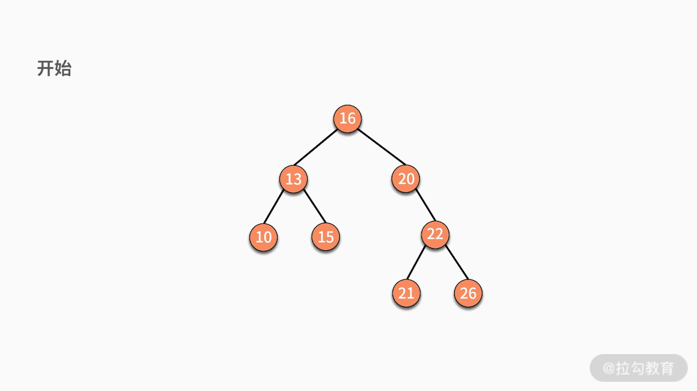
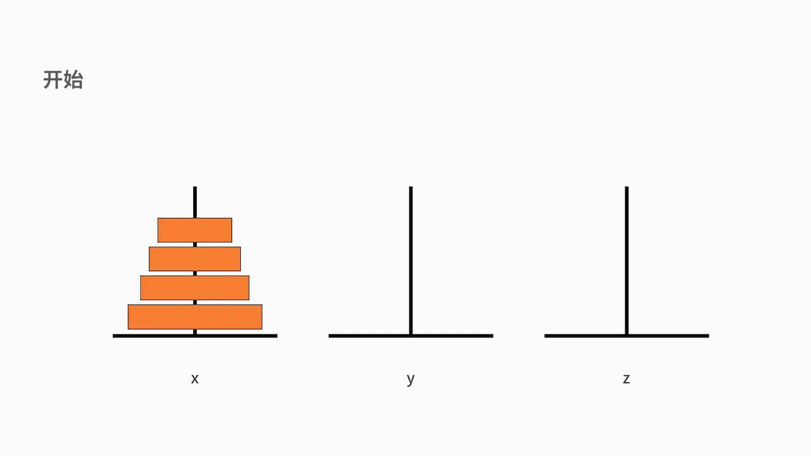

- 00 数据结构与算法，应该这样学！.md.html
- 01 复杂度：如何衡量程序运行的效率？.md.html
- 02 数据结构：将“昂贵”的时间复杂度转换成“廉价”的空间复杂度.md.html
- 03 增删查：掌握数据处理的基本操作,以不变应万变.md.html
- 04 如何完成线性表结构下的增删查？.md.html
- 05 栈：后进先出的线性表，如何实现增删查？.md.html
- 06 队列：先进先出的线性表，如何实现增删查？.md.html
- 07 数组：如何实现基于索引的查找？.md.html
- 08 字符串：如何正确回答面试中高频考察的字符串匹配算法？.md.html
- 09 树和二叉树：分支关系与层次结构下，如何有效实现增删查？.md.html
- 10 哈希表：如何利用好高效率查找的“利器”？.md.html
- 11 递归：如何利用递归求解汉诺塔问题？.md.html
- 12 分治：如何利用分治法完成数据查找？.md.html
- 13 排序：经典排序算法原理解析与优劣对比.md.html
- 14 动态规划：如何通过最优子结构，完成复杂问题求解？.md.html
- 15 定位问题才能更好地解决问题：开发前的复杂度分析与技术选型.md.html
- 16 真题案例（一）：算法思维训练.md.html
- 17 真题案例（二）：数据结构训练.md.html
- 18 真题案例（三）：力扣真题训练.md.html
- 19 真题案例（四）：大厂真题实战演练.md.html
- 20 代码之外，技术面试中你应该具备哪些软素质？.md.html
- 21 面试中如何建立全局观，快速完成优质的手写代码？.md.html
- 加餐 课后练习题详解.md.html
- 捐赠
11 递归：如何利用递归求解汉诺塔问题？
前面课时中，我们完成了数据结构基础知识的学习，从这一课时开始，我们将正式进入算法思维的学习。
不管是数据结构还是算法思维，它们的目标都是降低时间复杂度。数据结构是从数据组织形式的角度达成这个目标，而算法思维则是从数据处理的思路上去达成这个目标。
举个例子，虽然你选择了一个高效率的数据结构去处理问题，但如果数据处理的逻辑上出现缺陷，仍然会产生很多无效计算，造成时间浪费，那么我们该如何完善数据处理的逻辑？本课时，我们就来学习利用递归求解汉诺塔问题，以此来开启算法思维的学习之路。
什么是递归
在数学与计算机科学中，递归 （Recursion)）是指在函数的定义中使用函数自身的方法，直观上来看，就是某个函数自己调用自己。
递归有两层含义：
- 递归问题必须可以分解为若干个规模较小、与原问题形式相同的子问题。并且这些子问题可以用完全相同的解题思路来解决；
- 递归问题的演化过程是一个对原问题从大到小进行拆解的过程，并且会有一个明确的终点（临界点）。一旦原问题到达了这个临界点，就不用再往更小的问题上拆解了。最后，从这个临界点开始，把小问题的答案按照原路返回，原问题便得以解决。
简而言之，递归的基本思想就是把规模大的问题转化为规模小的相同的子问题来解决。 在函数实现时，因为大问题和小问题是一样的问题，因此大问题的解决方法和小问题的解决方法也是同一个方法。这就产生了函数调用它自身的情况，这也正是递归的定义所在。
格外重要的是，这个解决问题的函数必须有明确的结束条件，否则就会导致无限递归的情况。总结起来，递归的实现包含了两个部分，一个是递归主体，另一个是终止条件。
递归的算法思想
递归的数学模型其实就是数学归纳法，这个证明方法是我们高中时期解决数列问题最常用的方法。接下来，我们通过一道题目简单回顾一下数学归纳法。
一个常见的题目是：证明当 n 等于任意一个自然数时某命题成立。
当采用数学归纳法时，证明分为以下 2 个步骤：
- 证明当 n = 1 时命题成立；
- 假设 n = m 时命题成立，那么尝试推导出在 n = m + 1 时命题也成立。
与数学归纳法类似，当采用递归算法解决问题时，我们也需要围绕这 2 个步骤去做文章：
- 当你面对一个大规模问题时，如何把它分解为几个小规模的同样的问题；
- 当你把问题通过多轮分解后，最终的结果，也就是终止条件如何定义。
所以当一个问题同时满足以下 2 个条件时，就可以使用递归的方法求解：
- 可以拆解为除了数据规模以外，求解思路完全相同的子问题；
- 存在终止条件。
在我们讲述树结构时，曾经用过递归去实现树的遍历。接下来，我们围绕中序遍历，再来看看递归在其中的作用。
对树中的任意结点来说，先中序遍历它的左子树，然后打印这个结点，最后中序遍历它的右子树。可见，中序遍历是这样的一个问题，如下图所示：
当某个结点没有左子树和右子树时，则直接打印结点，完成终止。由此可见，树的中序遍历完全满足递归的两个条件，因此可以通过递归实现。例如下面这棵树：
当采用递归实现中序遍历时，程序执行的逻辑架构如下图所示：

其中，每个蓝色的括号都是一次递归调用。代码如下所示：
// 中序遍历
public static void inOrderTraverse(Node node) {
if (node == null)
return;
inOrderTraverse(node.left);
System.out.print(node.data + " ");
inOrderTraverse(node.right);
}
以上就是递归的算法思想。我们总结一下，写出递归代码的关键在于，写出递推公式和找出终止条件。
也就是说我们需要：首先找到将大问题分解成小问题的规律，并基于此写出递推公式；然后找出终止条件，就是当找到最简单的问题时，如何写出答案；最终将递推公式和终止条件翻译成实际代码。
递归的案例
下面我们通过一个古老而又经典的汉诺塔问题，帮助你理解复杂的递归问题。
汉诺塔问题是源于印度一个古老传说的益智玩具。大梵天创造世界的时候做了三根金刚石柱子，在一根柱子上从下往上按照大小顺序摞着 64 片黄金圆盘。大梵天命令婆罗门把圆盘从下面开始按大小顺序重新摆放在另一根柱子上，并且规定，在小圆盘上不能放大圆盘，在三根柱子之间一次只能移动一个圆盘。
我们可以把这个问题抽象为一个数学问题。如下图所示，从左到右有 x、y、z 三根柱子，其中 x 柱子上面有从小叠到大的 n 个圆盘。现要求将 x 柱子上的圆盘移到 z 柱子上去。要求是，每次只能移动一个盘子，且大盘子不能被放在小盘子上面。求移动的步骤。

我们来分析一下这个问题。这是一个大规模的复杂问题，如果要采用递归方法去解决的话，就要先把问题化简。
我们的原问题是，把从小到大的 n 个盘子，从 x 移动到 z。
我们可以将这个大问题拆解为以下 3 个小问题：
- 把从小到大的 n-1 个盘子，从 x 移动到 y；
- 接着把最大的一个盘子，从 x 移动到 z；
- 再把从小到大的 n-1 个盘子，从 y 移动到 z。
首先，我们来判断它是否满足递归的第一个条件。 其中，第 1 和第 3 个问题就是汉诺塔问题。这样我们就完成了一次把大问题缩小为完全一样的小规模问题。我们已经定义好了递归体，也就是满足来递归的第一个条件。如下图所示：

接下来我们来看判断它是否满足终止条件。随着递归体不断缩小范围，汉诺塔问题由原来“移动从小到大的 n 个盘子”，缩小为“移动从小到大的 n-1 个盘子”，直到缩小为“移动从小到大的 1 个盘子”。移动从小到大的 1 个盘子，就是移动最小的那个盘子。根据规则可以发现，最小的盘子是可以自由移动的。因此，递归的第二个条件，终止条件，也是满足的。
经过仔细分析可见，汉诺塔问题是完全可以用递归实现的。我们定义汉诺塔的递归函数为 hanio()。这个函数的输入参数包括了：
- 3 根柱子的标记 x、y、z；
- 待移动的盘子数量 n。
具体代码如下所示，在代码中，hanio(n, x, y, z)，代表了把 n 个盘子由 x 移动到 z。根据分析，我们知道递归体包含 3 个步骤：
- 把从小到大的 n-1 个盘子从 x 移动到 y，那么代码就是 hanio(n-1, x, z, y)；
- 再把最大的一个盘子从 x 移动到 z，那么直接完成一次移动的动作就可以了；
- 再把从小到大的 n-1 个盘子从 y 移动到 z，那么代码就是 hanio(n-1, y, x, z)。对于终止条件则需要判断 n 的大小。如果 n 等于 1，那么同样直接移动就可以了。
public static void main(String[] args) {
String x = "x";
String y = "y";
String z = "z";
hanio(3, x, y, z);
}
public void hanio(int n, String x, String y, String z) {
if (n < 1) {
System.out.println("汉诺塔的层数不能小于1");
} else if (n == 1) {
System.out.println("移动: " + x + " -> " + z);
return;
} else {
hanio(n - 1, x, z, y);
System.out.println("移动: " + x + " -> " + z);
hanio(n - 1, y, x, z);
}
}
我们以 n = 3 为例，执行一下这段代码：
在主函数中，执行了 hanio(3, “x”, “y”, “z”)。我们发现 3 比 1 要大，则进入递归体。分别先后执行了 hanio(2, “x”, “z”, “y”)、”移动: x->z”、hanio(2, “y”, “x”, “z”)。
其中的 hanio(2, “x”, “z”, “y”)，又先后执行了 hanio(1, “x”, “y”, “z”)、”移动: x->y”、hanio(1, “z”, “x”, “y”)。在这里，hanio(1, “x”, “y”, “z”) 的执行结果是 “移动: x->z”，hanio(1, “z”, “x”, “y”)的执行结果是”移动: z->y”。
另一边，hanio(2, “y”, “x”, “z”) 则要先后执行 hanio(1, “y”, “z”, “x”)、”移动: y->z”、hanio(1, “x”, “y”, “z”)。在这里，hanio(1, “y”, “z”, “x”) 的执行结果是”移动: y->x”，hanio(1, “x”, “y”, “z”) 的执行结果是 “移动: x->z”。

最终梳理一下，代码执行的结果就是：
移动: x->z
移动: x->y
移动: z->y
移动: x->z
移动: y->x
移动: y->z
移动: x->z
抛开用于处理输入异常的代码部分不谈，它的代码包含了 2 个部分：
- 终止条件，即如何处理小规模的问题，实现的代码量一定是很少的；
- 递归体，即大问题向小问题分解的过程，实现的代码量也不会太多。
因此，一个复杂问题的递归实现，通常代码量都不会很多。
总结
递归的核心思想是把规模大的问题转化为规模小的相似的子问题来解决。
在函数实现时，因为解决大问题的方法和解决小问题的方法往往是同一个方法，所以就产生了函数调用它自身的情况。另外这个解决问题的函数必须有明显的结束条件，这样就不会产生无限递归的情况了。递归的应用非常广泛，之后我们要讲的很多数据结构和算法的编码实现都要用到递归，例如分治策略、快速排序等等。
练习题
下面，我们给出一道练习题，斐波那契数列。斐波那契数列是：0，1，1，2，3，5，8，13，21，34，55，89，144……。你会发现，这个数列中元素的性质是，某个数等于它前面两个数的和；也就是 a[n+2] = a[n+1] + a[n]。至于起始两个元素，则分别为 0 和 1。在这个数列中的数字，就被称为斐波那契数。
现在的问题是，写一个函数，输入 x，输出斐波那契数列中第 x 位的元素。例如，输入 4，输出 2；输入 9，输出 21。要求：需要用递归的方式来实现。详细分析和答案，请翻阅 16 课时例题 1。
© 2019 - 2023 Liangliang Lee. Powered by gin and hexo-theme-book.